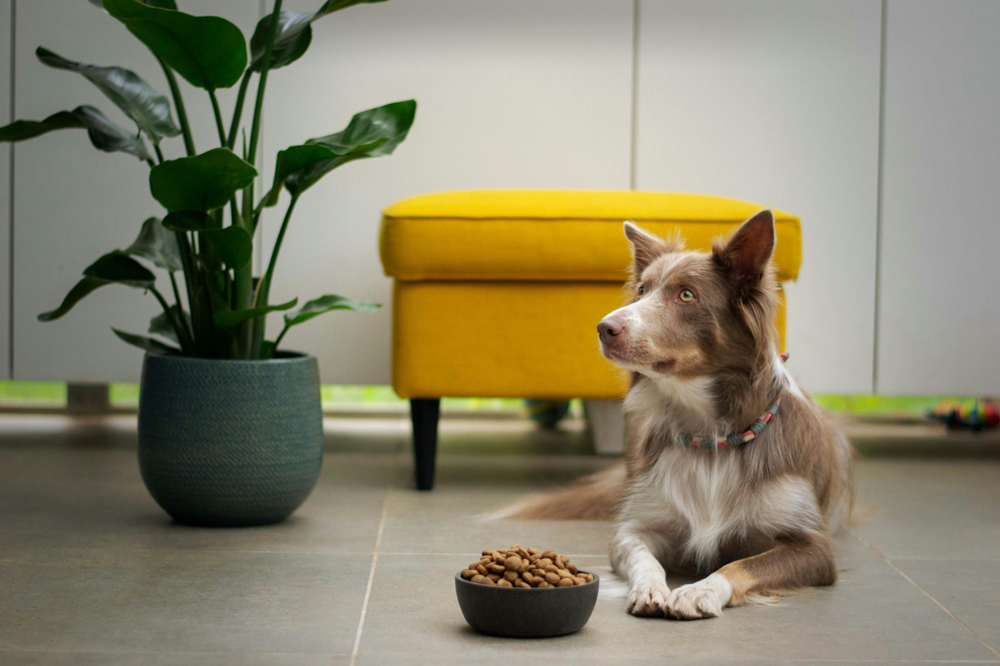

Principais Notícias

Alimentação Adequada para seu pet
Descubra dicas essenciais sobre a alimentação ideal para cães e gatos, incluindo informações sobre rações balanceadas, alimentos frescos e dietas especiais.

Produtos de Higiene e Cuidados com a Pelagem
Conheça os melhores produtos de higiene para manter a pelagem do seu pet impecável, promovendo saúde e bem-estar.

Brinquedos Interativos para Estimular Seu Pet
Explore a importância dos brinquedos interativos na vida do seu animal de estimação e encontre sugestões para mantê-los felizes e mentalmente ativos.
Dicas de Adestramento para pets
Aprenda técnicas eficazes de treinamento para cães e gatos, desde comandos básicos até truques divertidos, promovendo uma convivência mais harmoniosa.